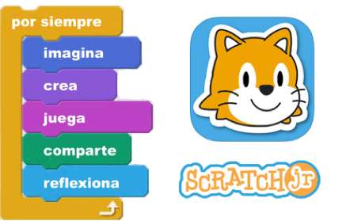

<section id="course-baby" data-sr>
  <div class="container">
    <course-bar></course-bar>
    <div class="row">
      <div class="col-md-6" >
          <h2>好奇宝宝（6-7周岁）</h2>
          <p>本启蒙课程培养孩童对科技的兴趣，通过ScratchJr进行简单的游戏设计，动画模拟，故事表达等，初识编程概念，并为学习进阶课程打下基础。</p>
      </div>  
      <div class="col-md-5 col-md-offset-1" >
          
      </div>
    </div>
  </div>
</section>
